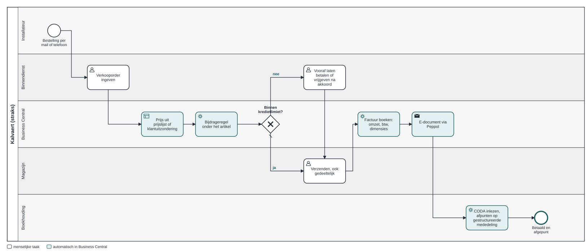

Prijzen overtypen
420 prijsafspraken staan als vrije tekst in notities.
Onafhankelijke portfoliocase · fictieve organisatie · Philippe Godfroy
Hoe een functional consultant een groothandel met 25 wensen naar Business Central brengt: standaard waar het kan, één extensie waar het moet, en een go-live die pas groen wordt als de cijfers kloppen. Die ene extensie staat ook in AL, met tests, en met een Azure-ontwikkelomgeving ernaast.
Kalvaert, een technische groothandel in West-Vlaanderen (62 medewerkers, 1.480 installateurs als klant), werkt met een lokaal pakket van twintig jaar oud. De support stopt eind dit jaar, en Peppol-e-facturatie is in België verplicht sinds 2026. De go-live ligt vast.
420 prijsafspraken staan als vrije tekst in notities.
Elke factuur in het pakket én in een Peppol-portaal.
38.000 artikels, 12.400 actief, 1.150 vermoedelijke dubbels.
Per vestiging alleen zichtbaar na twee exports.
Links hoe het nu loopt in het oude pakket, rechts hoe het loopt in Business Central. Zelfde plek op het scherm, zodat je ziet wat verandert: welke stappen een mens nog doet en welke Business Central overneemt.
Vandaag = bevindingen uit de (gesimuleerde) workshops. Straks = het oplossingsontwerp. Geen gemeten resultaat bij een echt bedrijf.

models/*.json; dezelfde bron levert geldige .bpmn-bestanden die in bpmn.io of Camunda Modeler openen (bpmn/). Elke stap verwijst naar een requirement.De projectmanager bewaakt planning en budget, de developer bouwt, de klant beslist. De AL-code hieronder is wat de developer zou opleveren: hier gebouwd om de spec te toetsen.
Elke gap doorloopt standaard → configuratie → app → procesaanpassing → extensie. Resultaat: 16 keer standaard of configuratie, 1 extensie, 29,0 dagen in plaats van 40,5.
Verworpen: per gap ad hoc beslissen — dan wint maatwerk altijd.
Maatwerk alleen voor de verwijderingsbijdrage: wettelijk, honderden regels per maand, vandaag vaak vergeten. De automatische bonus werd een kwartaalrapport.
Verworpen: rebatemodule in week 7 (+7 dagen, go-live onder druk).
Openstaande posten per document, tegen een overgangsrekening die op nul moet eindigen. Drie keer geoefend. Historiek niet migreren.
Verworpen: saldi per klant migreren — dan kan niemand in januari nog een betaling afpunten.
flowchart LR K["Klant K10023
bedrijf BINNENL · btw BINNENL"] --> F((Verkoopfactuur)) A["Artikel A-220318 boiler
HANDELSGOED · btw 21"] --> F F --> O["700000 omzet binnenland"] F --> B["700900 verwijderingsbijdrage"] F --> V["451000 btw 21% · rooster 03/54"] F --> D["400000 handelsdebiteuren"] F --> C["609000 kostprijs / 340000 voorraad"]
Een spec is pas goed als een developer ze kan bouwen zonder te gokken. Dus is ze gebouwd: de extensie, de testgevallen als AL-tests, en het hele oplossingsontwerp als installeerbare demo-inrichting die uit dezelfde data komt als deze site.
Bijdrage per artikel; precies één bijdrageregel onder de artikelregel, alleen voor BINNENL. Volgt hoeveelheid en deellevering, verdwijnt met de artikelregel, niet met de hand te wijzigen. 14 subscribers op standaard events, geen gewijzigde standaardcode.
Elke test heet naar het testgeval in de spec: één bijdrageregel, hoeveelheid volgt, EU-klant krijgt niets, kopiëren geeft geen dubbel (HC-07), boeking op 700900 met btw.
Rekeningen, boekings- en btw-groepen, dimensies met "code verplicht", locaties, artikels, klanten en het migratiedagboek tegen 499000, gegenereerd uit data/case.json. De compiler controleert elk veld tegen Business Central.
/// U9 (gevonden bij de bouw): bij een deellevering verzendt /// de bijdrage mee met de goederen, niet allemaal vooraf. local procedure SyncQuantityToHandle(var FeeLine: Record "Sales Line"; ItemLine: Record "Sales Line"): Boolean begin case FeeLine."Document Type" of FeeLine."Document Type"::Order: if FeeLine."Qty. to Ship" <> ItemLine."Qty. to Ship" then begin FeeLine.Validate("Qty. to Ship", ItemLine."Qty. to Ship"); exit(true); end; ...
bc/scripts/sandbox.mjs all: publiceren, inrichten, migreren, order via de API boeken en vergelijken met de boekingsmatrix, AL-tests draaien). Tot dan is "werkt" een verwachting.flowchart TB CON(["Consultant"]) -- "CSV-export" --> FN["Functies
migratiecontrole · afstemming"] FN --> ST[("Storage
export + rapport")] FN -- "managed identity" --> KV["Key Vault"] FN -- "API" --> BC["BC-sandbox
+ extensie"] BC -- "telemetrie" --> AI["Application Insights
8 hypercare-queries"] AI --> AL["Alert: veel foutmeldingen"]
Gebouwd en gevalideerd (Bicep build + lint in CI, functielogica getest zonder Azure). Nog niet gedeployed: dat kost geld en gebeurt alleen na akkoord. azure/
€1.586,40
verschil in de generale repetitie — een creditnota na de export. Cutoverplan aangepast; daarna €0,00.
8 criteria
voor de go/no-go, vooraf vastgelegd. Met de eerste export: no-go.
1 van 8
hypercare-meldingen was een bug. De rest: data, setup of opleiding — elk met een structurele maatregel.
Gesimuleerde resultaten met illustratieve aannames — geen echte bedrijfsdata.
| Eis | Bewijs | Waar |
|---|---|---|
| Fit-gap-documenten, klantbehoeften → BC | register met 25 requirements, zes klassen, beslisser per regel | Openen |
| Bedrijfsprocessen analyseren, challengen | workshopplan, 5 verslagen, 4 BPMN-modellen as-is/to-be, 6 ADR's | Openen |
| Kennis van Business Central | boekingsgroepen, btw-matrix met Belgische roosters, dimensies, workflow — en dezelfde inrichting als AL, gecontroleerd door de compiler | Openen |
| Specificaties in een use case | use case met 9 uitzonderingen en 9 testgevallen, gebouwd en als AL-tests uitgeschreven | Openen |
| Schakel met de developer | AL-extensie, testcodeunit, wat de bouw aan de spec veranderde | Openen |
| Implementatie en uitrol | migratieplan, afstemming, cutover, go/no-go, 17 UAT-scenario's, migratiecontrole als Azure-functie | Openen |
| Eerste nazorg | hypercare-log naar oorzaak, telemetrie-queries in KQL | Openen |
| Schakel klant – AM – PM – developer | RACI, change request, statusrapport | Openen |
data/case.json) en wordt bij elke wijziging automatisch gecontroleerd.Demo laadt niet? Bekijk de schermafbeeldingen.
Om te bewaren of door te sturen: samenvatting op één pagina · interviewdeck · one-pager als PDF.